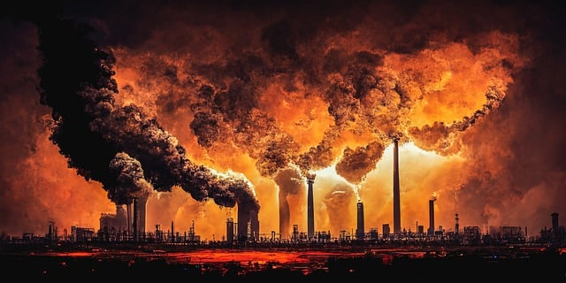
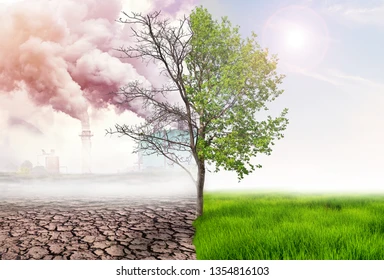
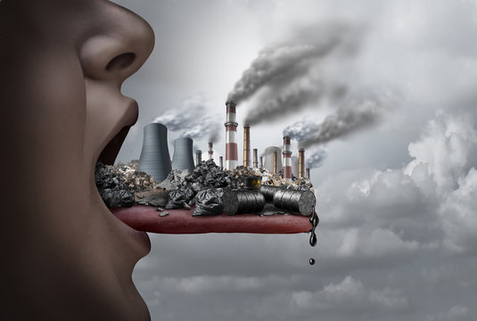

Air pollution is one of the greatest threats to children’s health. Ninety-nine per cent of people in the world live in places where the air is considered unhealthy. When children breathe toxic air, it harms their health and jeopardizes their future. For children to grow up healthy, they need clean, safe air. Here are some ways you can reduce air pollution in your environment and help protect your child from its impacts.
About
Air Pollution




contact
contact us
Air pollution is a global problem and requires action not just by families and individuals, but by communities and governments. However, there are many things we can do to reduce our exposure to air pollution and reduce its impact on children. Here are some key steps you can take with your family:
REVIEWS
Air pollution is a public health emergency and unless governments and businesses take concrete steps to reduce it, children will continue to suffer the most. You can play an important role in raising awareness of the problem and the solutions. …
FAQ's
What is air pollution?
When harmful substances (pollutants) particles, gases, or matter are released into the air and reduce its quality, the air is polluted. When it is very polluted, we can see a gray or yellow haze..